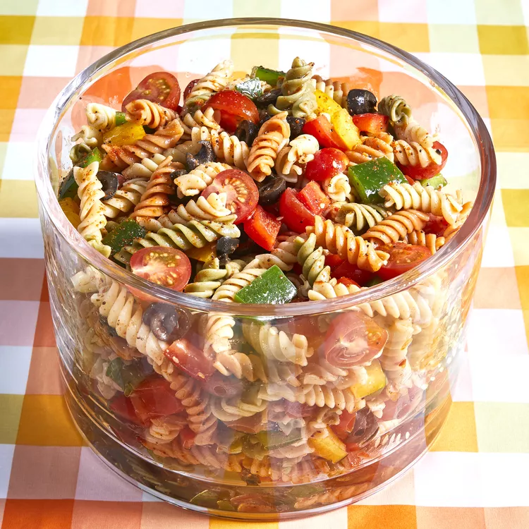

Our Pasta Salad

Pasta Salad is a delecious treat for any occasion. Try this easy recipe for your next party or function.
What you will need
- 1 lb tri-colored spiral pasta
- 16oz italian-style salad dressing
- 6 tbs salad seasoning mix
- 2 cups cherry tomatoes, diced
- 1 green bell pepper, chopped
- 1 red bell pepper, chopped
- 1 yellow bell pepper, chopped
- 2.25oz can of black olives, chopped
Steps
- Bring a large pot of ligtly salted water to a boil. Cook pasta in the boiling water, stirring occasionally, until tender yet firm to the bite, about 10 to 12 minutes.
- Whisk Italian dressing and salad spice mix together until smooth.
- Combine pasta, tomates, bell peppers, and olives in a salad bowl; pour dressing over salad and toss to coat. Refrigerate salad, 8 hours to overnight.
- Enjoy!
* The inspiration and image for this practice recipe comes from allrecipes.com.